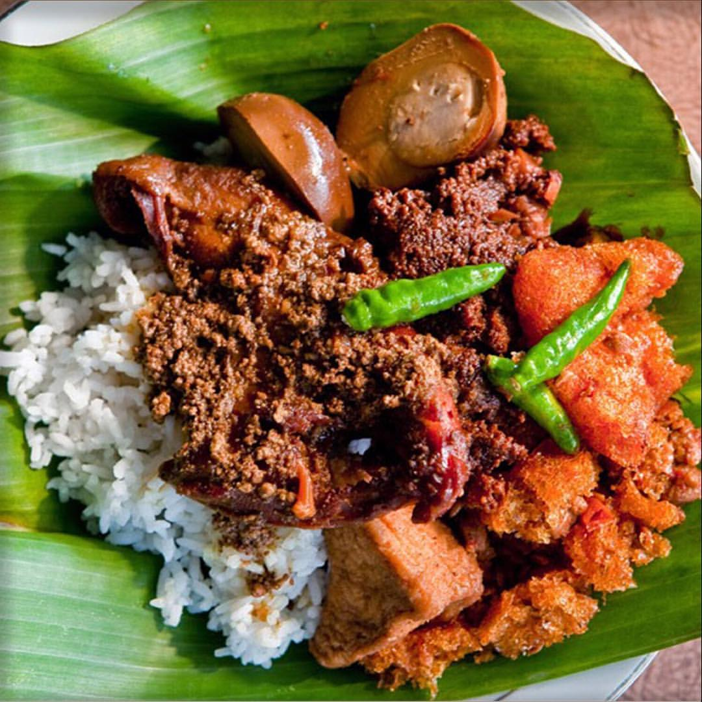
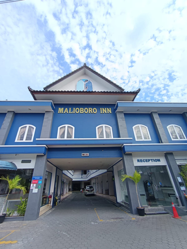
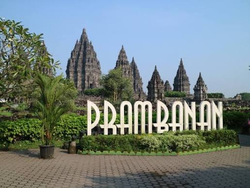
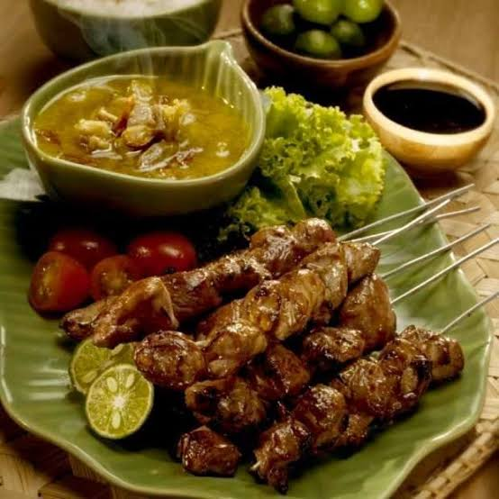
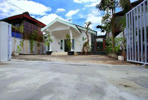
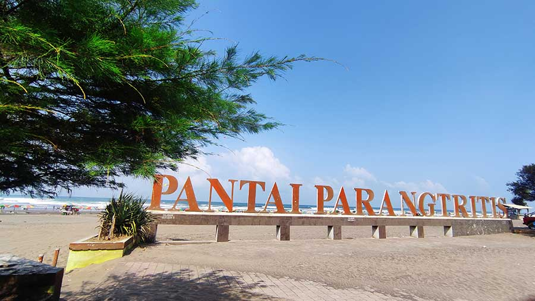
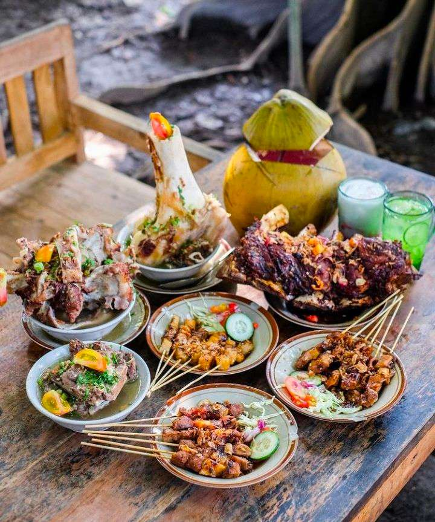
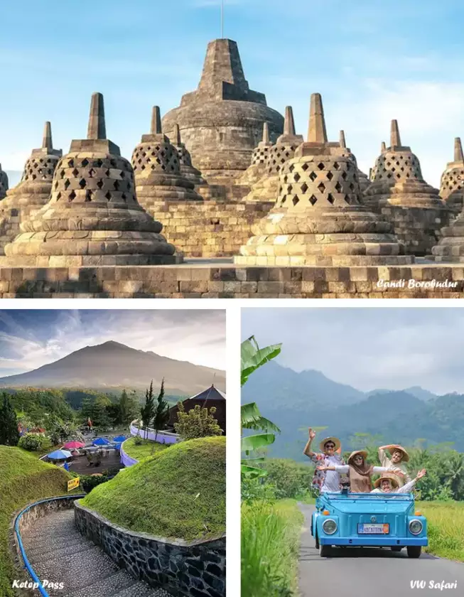
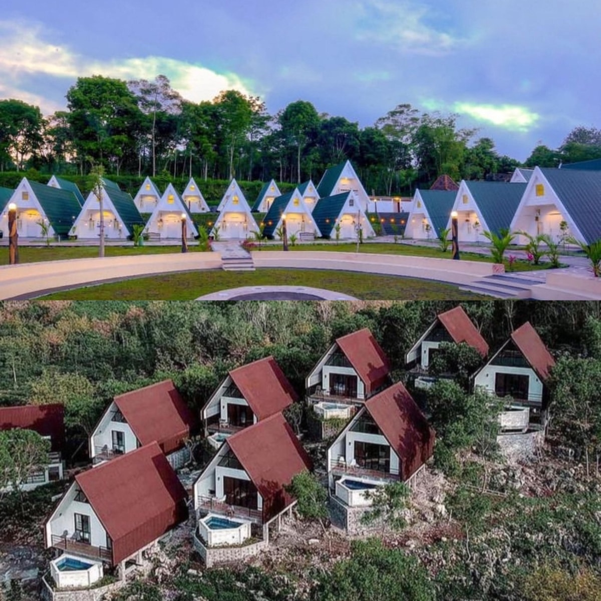
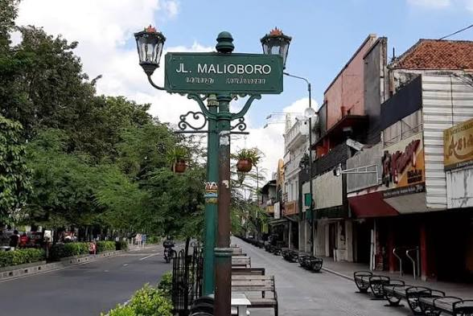

Selamat Datang di Explore jogja
Temukan berbagai kuliner, penginapan, dan tempat wisata menarik di Jogja.

Gudeg jogja
Gudeg Jogja adalah makanan khas Yogyakarta berbahan dasar nangka muda (gori) yang dimasak lama dengan santan, gula jawa, dan rempah-rempah hingga berwarna cokelat pekat dan memiliki cita rasa manis legit.

Hotel Malioboro Inn Yogyakarta
Hotel Malioboro Inn Yogyakarta adalah sebuah akomodasi atau penginapan komersial berbentuk hotel bintang 3 yang menyediakan jasa penyewaan kamar, fasilitas makanan dan minuman, serta fasilitas pendukung lainnya bagi masyarakat umum atau wisatawan yang sedang berkunjung ke Yogyakarta.

Candi Prambanan
Candi Prambanan (atau Candi Siwagrha) adalah kompleks candi Hindu terbesar dan termegah di Indonesia sekaligus salah satu mahakarya arsitektur Hindu terbesar di Asia Tenggara

Sate Klathak
Sate Klathak adalah kuliner khas berupa sate kambing yang berasal dari Pleret, Bantul, Daerah Istimewa Yogyakarta. Hidangan ini telah ditetapkan sebagai Warisan Budaya Takbenda Indonesia.

Omah Condro Homestay by The Grand Java
Omah Condro Homestay by The Grand Java adalah akomodasi penginapan berperingkat tinggi yang terletak di kawasan Mantrijeron, Kota Yogyakarta. Homestay ini dirancang dengan suasana yang nyaman dan ramah keluarga, menjadikannya pilihan populer bagi wisatawan yang berkunjung ke Jogja dalam grup atau bersama keluarga besar.

Pantai Parangtritis
Pantai Parangtritis adalah destinasi wisata bahari dan ikon pariwisata populer yang terletak di Kalurahan Parangtritis, Kapanewon Kretek, Kabupaten Bantul, Daerah Istimewa Yogyakarta.

kuliner Jogja
kuliner Jogja memiliki banyak pilihan kuliner legendaris dan khas yang wajib Anda coba saat berkunjung

Wisata Jogja
Secara umum, wisata Jogja adalah segala bentuk kegiatan perjalanan atau kunjungan ke Daerah Istimewa Yogyakarta (DIY) yang dilakukan untuk rekreasi, mempelajari sejarah, menikmati seni dan tradisi, hingga mencicipi kuliner khas

Penginapan Jogja
Penginapan jogja membuat jauh lebih nyaman di BaliSuasana penginapan di Yogyakarta sangat beragam dan punya karakter yang kuat—mulai dari nuansa tradisional Jawa yang tenang, gaya artsy dan bohemian yang santai, hingga penginapan modern dan sejuk di area pegunungan
Bakmi jawa Jogja
bakmi jawa di Jogja adalah agenda wajib untuk berburu kuliner malam. Diracik menggunakan mi kuning dan bihun, dimasak satu per satu menggunakan tungku arang (anglo), serta diperkaya gurihnya telur bebek dan ayam kampung, setiap warung memiliki karakter rasa dan keunikan suasananya sendiri
Novotel Suites Yogyakarta Malioboro
Novotel Suites Yogyakarta Malioboro adalah hotel bintang 4 modern bergaya all-suite pertama di Indonesia yang berlokasi strategis tepat di jantung kota. Terletak di sepanjang kawasan legendaris Jalan Malioboro, hotel ini menawarkan akses langsung ke Malioboro Mall serta kemudahan berjalan kaki ke stasiun kereta Tugu, pasar tradisional, dan pusat kuliner.

Malioboro
Jalan Malioboro adalah jantung pariwisata, budaya, dan pusat ekonomi legendaris di Kota Yogyakarta. Membentang sepanjang sekitar 2 kilometer dari Tugu Yogyakarta hingga Titik Nol Kilometer, kawasan ini telah ditetapkan sebagai bagian dari situs warisan dunia UNESCO karena nilai filosofisnya yang menghubungkan Keraton Yogyakarta dengan Gunung Merapi.
Penginapan
temukan berbagai penginapan di jogja yang perpaduan budaya Jawa klasik dengan sentuhan modern kontemporer yang sangat memanjakan mata.
Royal Malioboro by Aston
Royal Malioboro by ASTON adalah hotel bintang 4 premium yang dikelola oleh Archipelago International. Hotel ini menawarkan aksesibilitas luar biasa di pusat kota Yogyakarta, menjadikannya pilihan favorit bagi pelancong bisnis maupun wisatawan yang mencari kenyamanan maksimal tanpa repot memikirkan transportasi

Halona Malioboro
Halona Malioboro adalah jaringan homestay populer dan ramah kantong di Kota Yogyakarta yang dikelola oleh Halona Homestay Jogja Official. Penginapan ini menjadi pilihan favorit bagi keluarga atau rombongan karena menawarkan op rumah sewaan berkapasitas besar dengan harga yang sangat terjangkau.
Omah Condro Homestay by The Grand Java
Omah Condro Homestay by The Grand Java adalah akomodasi penginapan berperingkat tinggi yang terletak di kawasan Mantrijeron, Kota Yogyakarta. Homestay ini dirancang dengan suasana yang nyaman dan ramah keluarga, menjadikannya pilihan populer bagi wisatawan yang berkunjung ke Jogja dalam grup atau bersama keluarga besar.